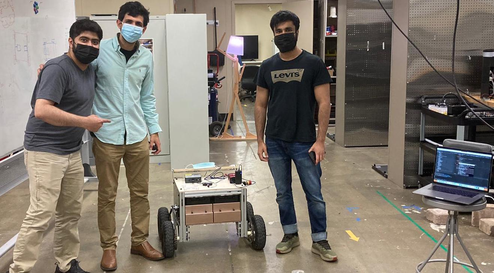

Robot and Drone Collaboration and Automation¶
In this blog post I share my experience and a few applications of robots and drones for the indoor enviroment. I cover some of the steps required, and provide access to computer vision, and control software. Applications include robot arm and drone with computer vision deliver food to nearby user, robot loads a dishwasher, and robots following humans.
A Simple Robot Arm¶
I worked directly on robotics in the Emerging Technologies and Innovation group at GE. First we designed a few experiences using a simple robot arm (Robotic xArm 6DOF). We added a camera and computer vision to allow the arm to reach for food items.
Add a Drone!¶
In addition, we did a proof of concept with the robot arm collaborating with a drone to deliver small food items to a nearby user. Below is a demo:
A Better Robot Arm¶
Following the success of this project, the group invested in more sophisticated robot arms, and I participated in creating experiences including, removing dishes from a dishwasher, making soup and pizza, and loading a laundry machine with clothes. Below we have a video of our dishwasher example
A Robot from Scratch¶
Finally, we worked closely with the FirstBuild Microfactory, to design a robot from scratch including selecting the motors, mounting and wiring batteries, and designing CAD frame with 80/20 t-slot materials that allow the user to attach different mechanisms for various applications. Additionally, a skid steer design allows for 360 turning inside the house in tight spaces and high payload capacity allows the robot to carry heavy weights without stalling torque. We add computer vision and load the drone to allow for collaboration